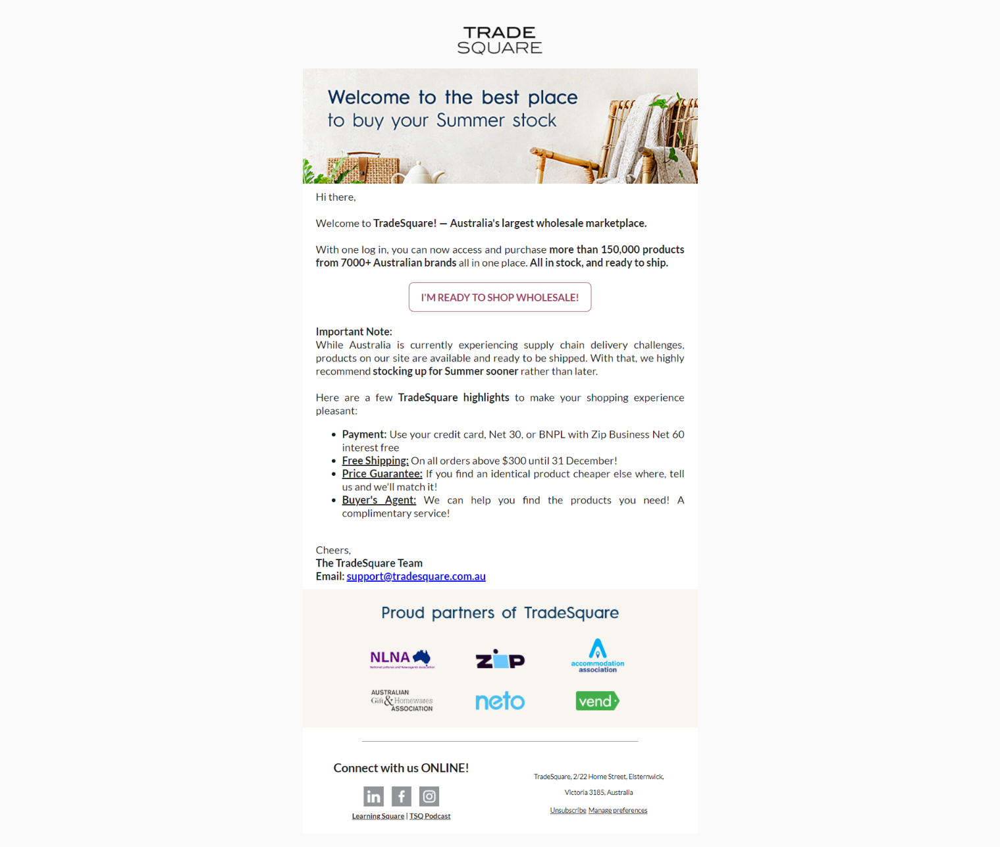
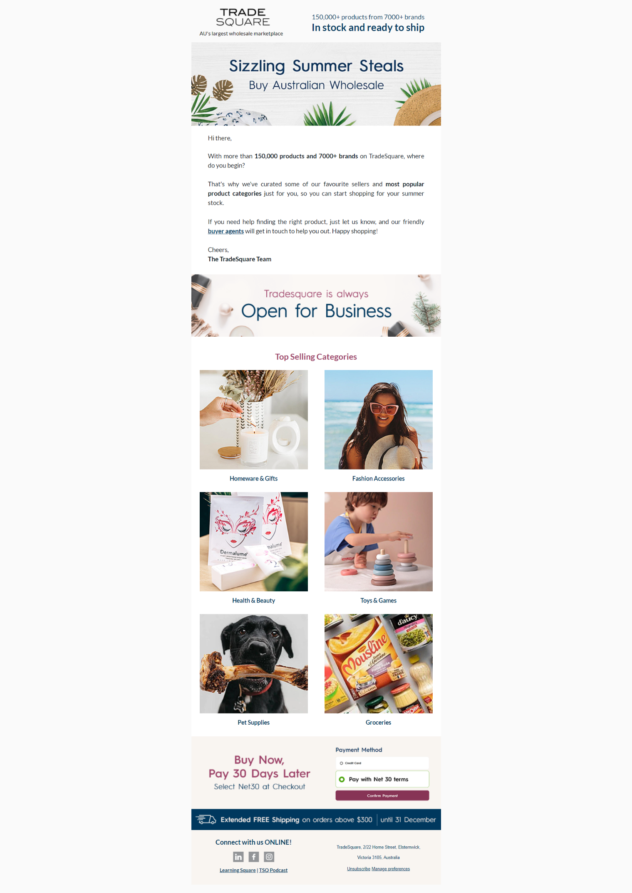
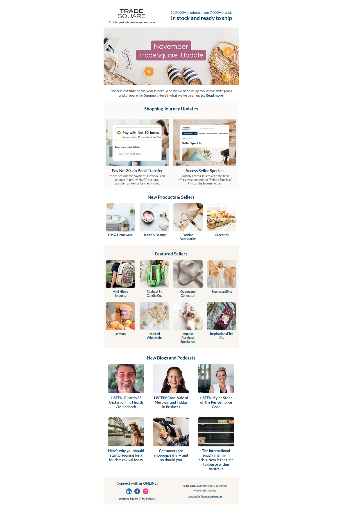
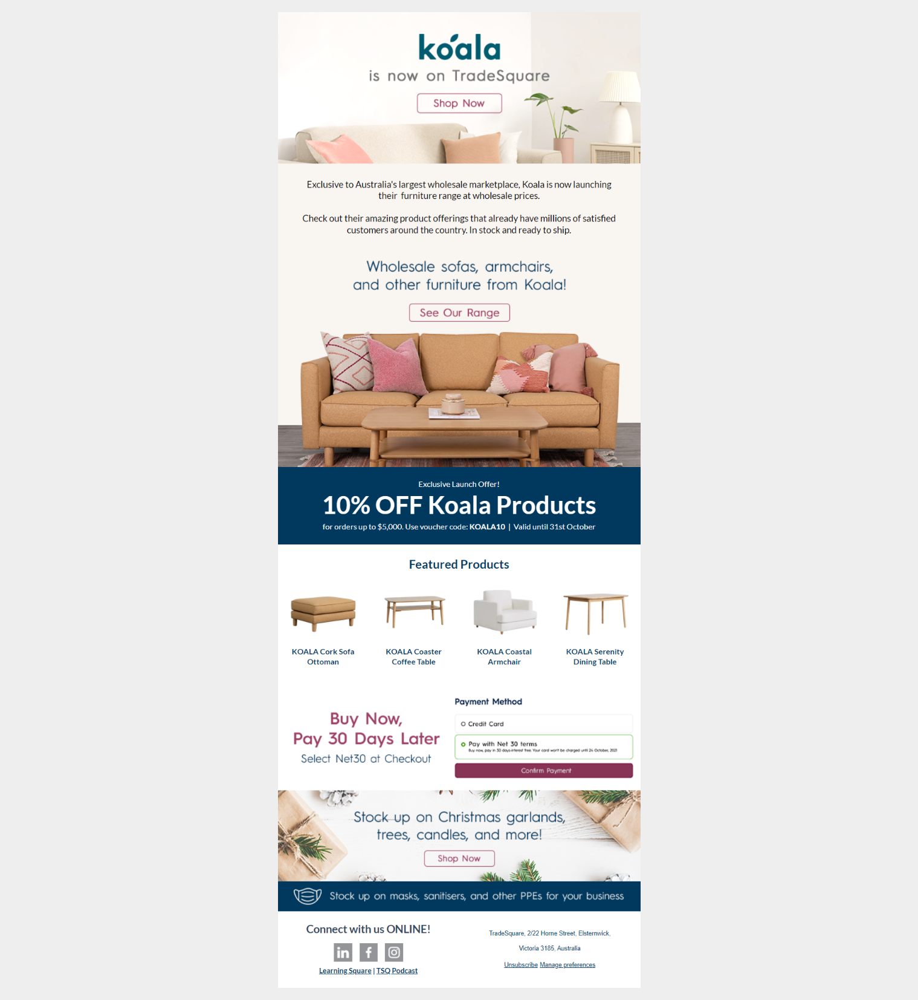
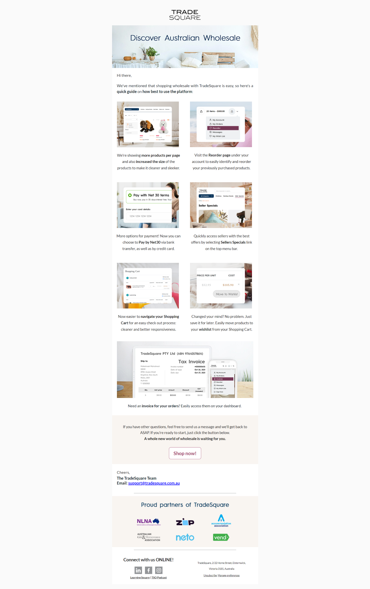
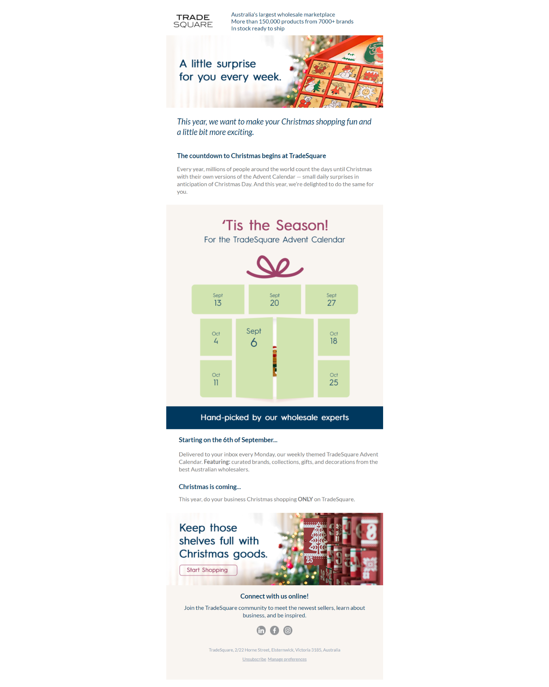

Browse the Archive
Click a category below to filter
- Journalism
- What happens when vaccine scepticism takes over? Look to the Philippines
- Ocean's 2018: Is Europe's Cybersecurity Keeping up with the Rise of Financial Cybercrime?
- Philippines tries to reignite production
- Meet the 5th generation of Aboitiz leaders
- The Price of Beauty
- Pamora Farm: Land of the Free
- The House the 'M' Built
- A Tale of Two Chickens
- The Cafe Scene
- How this family-run concept transitioned from a bazaar stall to a full-scale restaurant
- With Agimat, Niño Laus masters the art of foraging
- Capital Cities: Unabashedly Cheery
- A coffee journey: From the farm to your cup
- Dr Michio Kaku: Philippines poised to leap into the future
- Blogs & Thought Leadership
- Reasons Why Having A Fast Broadband Connection Is Essential
- Home Cybersecurity: How To Protect Your Family From Cyber Threats
- WiFi 6 Explained: Speed, Benefits, and Why It's Time to Upgrade
- Need A Change? Here's Your Guide To Choosing A New Broadband Plan
- How To Create The Optimal Gaming Room Setup
- Here's How To Understand Your Internet Speed Test Reading
- SecureNet Cyber Threat Report | October 2021
- How To Build A Smart Home The Smart Way
- Take Your Hybrid Work-From-Home To The Next Level For Peak Productivity
- How Our Trust & Safety Advisory Board is Navigating the Future on Bondee
- From Avatars to Advocates: How 2 Bondee Users Turned Their Online Connection into a Real-World Mission for Disability Inclusion
- Forging a Safer Future: Introducing the Bondee Trust and Safety Advisory Board
- Building Tomorrow's Future Innovators through the Bondee AI Summer Camp
- Blending Digital Innovation with Real-World Experiences: Creating Connections Through Offline Activities in Japan
- Insights on Social Media Strategy
- Welcome to Our New Look: Eleven International — Your Trusted Advisor for Cross-Border Communications
- Truly Eleven 'International'; The diversity that shapes us
- How the 'Attention Economy' of Web 2.0 failed us, and the promise Web 3.0 holds
- The Age of Outrage: How Reaction Culture is Damaging Discourse
- Tech Companies Can't Ignore Online Harassment of Women Any Longer
- The secret to being more creative, is to not be original
- Understanding the Role of Imagined Communities in Online Spaces
- Reclaiming Focus: The Necessity of Deep Reading
- Can technology reclaim our diminishing reading time?
- What's next after social media's failure to its users?
- What's next in media after the clickbait era?
- Press Releases
- Xiaomi SU7 Ultra Unveiled: The Ultimate Performance Technology Sedan
- Xiaomi Unveils Next-Gen AIoT Lineup Spanning Smart Home, Wearables, and Entertainment
- Xiaomi Unveils Xiaomi 15T Series Blending Outstanding Optics with Cutting-edge Technology and Flagship Design
- LOST MARY unveils strategic business plans as it enters Malaysia, pledging regulatory compliance
- Video-to-Music Composition Tool 'TemPolor' Launches to Challenge Sora AI and Suno
- Case Studies
- UniPass: A self-custodial Web3 wallet app developed by Account Labs
- BetterAlt: A Mumbai-based wellness company combining traditional Ayurvedic wisdom with modern science
- LightSpeed Studios: One of the world's leading global game developers
- Vidu: Leading generative AI video platform known for its pioneering Multi-Entity Consistency feature
- Brilliant Labs: Wearable tech company redefining how humans interact with technology through AI-powered glasses
- Red Door Digital: Gaming studio creating AAA-quality Web3 video games
- Product Copy & Articles
- Cut Through the Wellness Clutter With This Ancient Remedy for Ultimate Health
- The Future of Anti-aging Means Going Back to an Ancient Remedy
- A Smarter Way to Clean: Why a Robot Vacuum Is a Must-Have Addition to Modern Homes
- Why the Right Baby Carrier Can Make Postpartum Life Easier
- How Public Babywearing Challenges Old Notions of Manhood
- Landing Pages & UX Copy
- ViewQwest Residential Broadband
- Bondee Safety Hub
- Infographics & Reports
- From telco to techco: Enabling the future of digital transformationPDF
- From Onboarding to Team Engagement: Streamline Hybrid HR Processes With EasePDF
- Tech-driven inclusivity: strategies to upskill a diverse workforcePDF
- Next-gen security for the remote workplacePDF
- Email Marketing

Welcome to the Best Place to Buy Your Summer Stock
Sizzling Summer Steals: Buy Australian Wholesale
November TradeSquare Update
Koala is Now on TradeSquare: Launch Campaign
Discover Australian Wholesale: Platform Guide
'Tis the Season: TradeSquare Advent Calendar- Product Guides
- Connected KitchenPDF
- Get to Know Your OvenPDF
- Get to Know Your Hob & HoodPDF
- Get to Know Your Fridge & FreezerPDF
- Coffee ExpertisePDF
- Discover Meat Free MealsPDF
- How to Prepare BrunchPDF
- How to Prepare FishPDF
- How to Prepare Healthy DishesPDF
- Making Healthy Food ChoicesPDF
- How to Store Food ProperlyPDF
- How to Reduce Food Waste at HomePDF
- How to Shop SustainablyPDF
- Tips for Hosting a Dinner PartyPDF
No pieces match these filters.